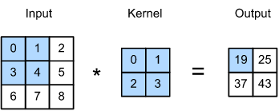
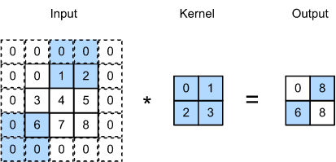
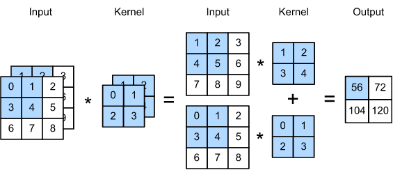

Procesamiento del Lenguaje Natural y Reconocimiento del Habla · Clase 05
05 · CNN - Teoría Completa
Contenido convertido sin ejecutar Python. Se conservan las salidas guardadas; las figuras matemáticas sustituidas y los gráficos de PE están identificados en el registro de revisión.
# Importación de libreríasimporttorchimporttorch.nnasnnimportmatplotlib.pyplotaspltimportnumpyasnpimportpandasaspdimportos,globimportlibrosaimportlibrosa.displayimportIPythonfromIPython.displayimportAudiofromIPython.displayimportImageimportwarningswarnings.filterwarnings('ignore')
Código Python · celda 3
# matplotlib tiene algunos warnings con respecto al comportamiento de librosa.display, así que los ignoramos: importwarnings;warnings.filterwarnings('ignore')fromIPython.core.displayimportHTMLimportspeechpy# Centrar las figuras de matplotlibHTML("""<style>.output_png { display: table-cell; text-align: center; vertical-align: middle;}</style>""")
Las arquitecturas basadas en Redes Neuronal Convolucionales (Convolutional Neural Network - CNN) se utilizan ampliamente en el campo de visión por computadora. En las siguientes secciones se detalla el funcionamiento de las redes CNN.
1.1 Invariancia
Conviene distinguir equivarianza e invariancia. Una convolución con pesos compartidos desplaza su mapa de salida cuando se desplaza la entrada, bajo condiciones compatibles de bordes y muestreo. Eso es equivarianza.
Una predicción invariante conserva su resultado frente al desplazamiento. Puede favorecerse mediante agregación espacial y entrenamiento, pero no es una propiedad automática de toda CNN. El padding y los strides también pueden romper la equivarianza exacta.
Para una imagen X y una representación H con estructura espacial, una capa densa puede escribirse como
Cada salida tiene sus propios pesos. Si se exige localidad y se comparten pesos entre posiciones, se obtiene una operación de correlación cruzada:
La elección de bordes, stride y dilatación completa su definición. La compartición favorece equivariancia a traslaciones compatibles con la rejilla y los bordes; no garantiza invariancia de toda la red.
La equivariancia a la traslación implica que un cambio en la entrada debería simplemente conducir a un cambio en la representación oculta . Esto solo es posible si y no dependen realmente de , es decir, tenemos y es una constante, digamos . Como resultado, podemos simplificar la definición de :
Luego, acabamos de realizar una convolución. Efectivamente, estamos ponderando píxeles en en la vecindad de la ubicación con coeficientes para obtener el valor . También, hay que tener en cuenta que necesita menos coeficientes que ya que no depende de la ubicación dentro de la imagen.
1.2.2 Localidad
El principio de la localidad, tiene sus bases en que no se tendría que mirar muy lejos de la ubicación para obtener información relevante para evaluar lo que está sucediente en . Esto significa que fuera de algún rango o , deberíamos establecer . De manera equivalente, podemos reescribir como
En pocas palabras, la ecuación de arriba es una capa convolucional. Las redes neuronales Convolucionales (CNN) son una familia especial de redes neuronales que contiene capas convolucionales. En la jerga, se conoce como un kernel de convolución, un filtro o simplemente los pesos de la capa que a menudo son parámetros que se pueden aprender. Cuando la región local es pequeña, la diferencia en comparación con una red neuronal completamente conectada puede ser muy elevada. Mientras que un un modelo MLP se necesitarían billones de parámetros para representar solo una capa en una red de procesamiento de imagenes, ahora solo se necesitaría de unos pocos miles de parámetros, sin alterar la dimensionalidad de las entradas o de las representaciones ocultas.
Pero existe un precio a pagar por la reducción de los parámetros que tienen que ser aprendidos. Las características son equivariantes a traslaciones compatibles con la discretización, salvo efectos de borde y que nuestra capa solo puede incorpar información local a la hora de determinar el valor de cada activación oculta. Todo aprendizaje depende de imponer un sesgo inductivo. Cuando ese sesgo concuerda con la realidad, obtenemos modelos eficientes de muestras que generalizan bien con datos nunca antes vistos por la red. Si los sesgos no están de acuerdo con la realidad, por ej., si las imágenes resultan no ser invariantes a la traducción, nuestros modelos podrían tener dificultades incluso para ajustarse a nuestros datos de entrenamiento.
1.3 Convoluciones
En matemáticas, la convolución entre dos funciones, se define como
Es decir, tenemos una medida de superposición entre y cuando una función se "invierte" y se despalza . Siempre que tenemos objetos discretos, la integral se convierte en una suma. Por ej., para los vectores del conjunto de vectores de dimensión infinita sumables cuadrados con índice que se ejecuta sobre obtenemos la siguiente definición:
Para tensores bidimensionales, tenemos una suma correspondiente con índices para y para , respectivamente:
1.4 Capas Convolucionales
Las capas convolucionales toman una ventana de un tamaño dado y las intensidades de los pesos según el filtro .
1.4.1 Canales
Dado que en la realidad las imagenes no son objetos bidimensionales, sino que por lo general son tensores de orden tres, caracterizados por una altura, ancho y canal, es decir, con una forma píxles por ejemplo. Si bien los dos primeros de estos ejes se refieren a las relacionaes espaciales, se puede considerar que el tercero asigna una representación multidimensional a la ubicación de cada píxel. Por tanto, indexamos como . El filtro convolucional debe adaptarse en consecuencia. En lugar de , ahora tenemos .
De la misma manera con las representaciones ocultas, en lugar de tener una única representación oculta correspondiente a cada ubicación espacial, queremos un vector completo de representaciones ocultas correspondientes a cada ubicación espacial. Podemos pensar que las representaciones ocultas comprenden una serie de cuadrículas bidimensionales apiladas una encima de la otra. Al igual que en las entradas, a eces se les llama canales. También suele denominarse mapa de características (feature map), ya que cada uno proporciona un conjunto especiado de características aprendidas de la capa subsiguiente.
De manera intuitiva, podríamos imaginar que en las capas inferiores que están más cerca de la entradas, algunos canales podrían especializarse para reconocer bordes mientras que otros podrían reconocer texturas.
1.5 Convoluciones para Imágenes
Luego de haber visto la teoría de las convoluciones, es hora de ver cómo funcionan en la práctica.
1.5.1 La operación de Correlación Cruzada (The Cross-Correlation Operation)
Estrictamente hablando, las capas convolucionales son un nombre inapropiado, ya que las operaciones que expresan se describen con mayor precisión como correlaciones cruzadas. Con base a lo explicado anteriormente de las capas convolucionales, un tensor de entrada y un tensor de núcle se combinan para producir un tensor de salida a través de una operación de correlación cruzada.
En la sig. figura, la entrada es un tensor bidimensional con una altura de y un ancho de , es decir . El ato y el ancho del kernel son ambos . La forma de la ventana del kernel (o ventana de convolución) viene dada por el alto y ancho del kernel (aquí es ).

Operaciones de correlación cruzada bidimensional. Las porciones sombreadas son el primer elemento de salida, así como los elementos de entrada y el tensor del núcleo utilizados para el cálculo de salida: .
Con entrada y kernel , stride uno y sin padding, la correlación cruzada produce . Por ejemplo, la primera salida es 0·0+1·1+3·2+4·3=19. Se multiplica y suma cada ventana; no se invierte el kernel como en la convolución matemática.
Una capa convolucional correlaciona de froma cruzada la entrada y el kernel y agrego un sesgo escalar para producir una salida. Los dos parámetros de una capa convolucional son el kernel y el sesgo escalar. Cuando entrenamos modelos basados en capas convolucionales, normalmente inicializamos los núcleos de manera aleatoria, tal como lo haríamos con una capa completamente conectada.
En la convolución o un núcleo de convolución , la altura y el ancho del kernel de convolución son y respectivamente. También, nos referimos a una capa convolucional con un núcleo simplemente como una capa convolucional .
1.5.3 Detección de Bordes en Imágenes
Para ver el funcionamiento de las capas convolucionales, primero analizamos una aplicación simple de una capa convolucional: detectar el borde de un objeto en una imagen al encontrar la ubicación del cambio de píxel. Primero, contruimos una "imagen" de píxeles. Las cuatro columnas del medio son negras y el resto son blancas
Luego, contruimos un kernel de con altura y anchura . Cuando calculamos la operaciión de correlación cruzada con la entrada, si los elementos adyacentes horizontales son los mismos, la salida es . En cualquier otro caso la salida es distinta de cero.
Código Python · celda 25
K=torch.tensor([[1.0,-1.0]])
Ahora estamos listos para calcular la operación de correlación cruzada con los argumentos (la entrada) y (el kernel). Como podemos ver, detectamos para el borde que va de blanco a negro y para el borde que va de negro a blanco. Todas las otras salidas toman un valor de .
Ahora podemos aplicar el kernel a la imagen transpuesta. Como es de esperar, desaparace. Por lo tanto en este caso, el kernel solo está detectando bordes verticales.
Diseñar un detector de bordes por diferencias finitas es aceptable si sabemos que esto es precesisamento lo que estámos buscando. Sin embargo, a medida que observamos kernels más grandes y consideremos capas sucesivas de convolución, podría ser imposible especificar precisamente qué debería hacer cada filtro manualmente.
Ahora aveamos si podemos el kernel generado por a partir de mirando solamente los pares de entrada-salida. Primero, contruimos una capa convolucional e inicializamos su kernel como un tensor aleatorio. A continuación, en cada iteración, usaremos el error cuadrático para comparar con la salida de la capa convolucional. Además, podemos calcular el gradiente para actualizar el kernel. Para que la búsqueda sea más simple, ingoramos el sesgo.
Código Python · celda 31
conv2d=nn.Conv2d(1,1,kernel_size=(1,2),bias=False)# The two-dimensional convolutional layer uses four-dimensional input and# output in the format of (example, channel, height, width), where the batch# size (number of examples in the batch) and the number of channels are both 1X=X.reshape((1,1,6,8))Y=Y.reshape((1,1,6,7))lr=3e-2# Learning rateforiinrange(10):Y_hat=conv2d(X)l=(Y_hat-Y)**2conv2d.zero_grad()l.sum().backward()# Update the kernelconv2d.weight.data[:]-=lr*conv2d.weight.gradif(i+1)%2==0:print(f'batch {i+1}, loss {l.sum():.3f}')
batch 2, loss 6.608
batch 4, loss 1.164
batch 6, loss 0.218
batch 8, loss 0.046
batch 10, loss 0.011
Podemos ver que el error arrojado es más pequeño después de 10 iteraciones. A continuación, se muestra el tensor kernel aprendido que se parece mucho al tensor que se definió manualmente.
Código Python · celda 33
conv2d.weight.data.reshape((1,2))
tensor([[ 0.9786, -0.9951]])
1.6 Padding y Stride
En las secciones anteriores, vimos que las dimensiones de la entrada eran de y las dimensiones del kernel de convolución era de , resultando en una representación de la salida de dimensión . Asumiendo que la entrada es de la forma y la forma del kernel de convolución es , la salida será de la forma . Por lo tanto, la forma de la salida de la capa convolución está determinada por la forma de la entrada y la forma del kernel de convolución.
En muchos casos, se incorporan técnicas, incluyendo padding y convoluciones strided, que afectan directamente al tamaño de la salida. Por lo general, los kernels tiene una dimensión más grande que , y luego de aplicar muchas convoluciones sucesivas, las salidas tienden a ser considerablemente más pequeñas que las entradas. Si comenzamos con una imagen de píxeles, capas de convolución de reducen la imagen a píxeles, cortando el de la imagen y con ello borrando cualquier información interesante sobre los límites de la imagen original. El padding es la herramienta más popular para manejar este problema.
En otros casos, queremos reducir la dimensionalidad drásticamente, por ejemplo, si encontramos que la resolución de la entrada original es difícil de manejar. Las convoluciones strided son una técnica popular que puede ayudar en estos casos.
1.6.1 Padding
Para ampliar una entrada 3×3 a 5×5 se agrega una fila o columna por lado (padding=1 en PyTorch), no un padding de 3×3. Con un kernel 2×2, stride 1 y dilatación 1, la salida es 4×4.
Correlación cruzada bidimensional con padding, donde la primera oepración está dada por: .
En la notación que usa padding total, se agregan filas y columnas. Con stride 1 y dilatación 1, la salida es . Para conservar tamaño, y . Si el total es impar, se reparte como piso y techo entre ambos lados; no se usa el mismo entero en los dos. Conv2d(padding=p) expresa p por lado.
importtorchfromtorchimportnn# We define a convenience function to calculate the convolutional layer. This# function initializes the convolutional layer weights and performs# corresponding dimensionality elevations and reductions on the input and# outputdefcomp_conv2d(conv2d,X):# Here (1, 1) indicates that the batch size and the number of channels# are both 1X=X.reshape((1,1)+X.shape)Y=conv2d(X)# Exclude the first two dimensions that do not interest us: examples and# channelsreturnY.reshape(Y.shape[2:])# Note that here 1 row or column is padded on either side, so a total of 2# rows or columns are addedconv2d=nn.Conv2d(1,1,kernel_size=3,padding=1)X=torch.rand(size=(8,8))comp_conv2d(conv2d,X).shape
torch.Size([8, 8])
Código Python · celda 40
# Here, we use a convolution kernel with a height of 5 and a width of 3. The# padding numbers on either side of the height and width are 2 and 1,# respectivelyconv2d=nn.Conv2d(1,1,kernel_size=(5,3),padding=(2,1))comp_conv2d(conv2d,X).shape
torch.Size([8, 8])
1.6.2 Stride
Cuando calculamos la correlación curzada, empezamos con una ventana de convolución en la esquina superior izquierda del tensor de entrada, y entonces nos deslizamos por todas las ubicaciones tanto hacia abajo y hacia la derecha. En los ejemplos anteriores, el desplazamiento por defecto era de un elemento por vez. Aveces, por efeciencia computacional o porque queremos reducir la resolución (downsample), movemos nuestra ventana más de un elemento a la vez, omitiendo las ubicaciones intermedias.
Nos referimos al números de filas y columnas atrvesadas por el desplazamiento como stride. La siguiente ifgura muestra una operación de correlación cruzada con strdie vertical de y de horizonal. Las porciones sombreadasson los elementos de salida, así como los elementos del tensor de entrada y del kernel utilizados para el cálculo de la salida:

Correlación cruzada con strides de y para la altura y anchura respectivamente. Podemos ver que cuando el segundo elemento de la primera columna es generado, la venta de convolución se desliza hacia abajo tres filas. La ventana de convolución se desliza dos columnas hacia la derecha cuando se genera el segundo elemento de la primera fila. Cuando la ventana de convolución continúa el deslizamiento dos columnas hacia la derecha en la entrada, no hay salida porque el elemento de entrada no puede llenar la ventana (a menos que se agregue otra columna de relleno).
En general, cuando el stride para la altura es y el stride de la anchura es , la forma de la salida es
Si establecemos y , entonce la forma de salida será simplificada a .
Si la altura y la anchura de la entrada son divisibles por los strides en la altura y anchura, entonces la forma de salida será .
Cuando el número de padding en ambos lados de la altura y anchura de la entrada son y respectivamente, llamamos al padding . Específicamente cuando , el padding es .
Cunado los strides en la altura y anchura son y respectivamente, llamamos al stride . Específicamente, cuando , el stride es . Por defecto, el padding es y el stride es . En la práctica, rara vez se utiliza strides o paddings no homogénenos, es decir, usualmente tenemos y
1.7 Canales de Entrada y Salida Múltiples
Como hemos visto anteriormente, en el campo de visión por computadora por lo general tendremos múltiples canales (por ej., las imágenes de color tienen los canales RGB estándar para indicar la cantidad de rojo, verde y azul).
Cuando añadimos canales, las entradas y las representaciones ocultas se convierten en tensores tridimensionales. Por ejemplo, cada imagen de entrada en RGB tiene una forma de . Nos referimos a este eje, con un tamaño de , como la dimensión del canal.
1.7.1 Canales de Entrada Múltiples
Cuando los datos de entrada contienen múltiples canales, necesitamos construir un kernel de convolución con el mismo número de canales de entrada como los datos de entrada, de modo que se pueda realizar una correlación cruzada con los datos de entrada. Asumiendo que el número de canales para los datos de entrada es , el número de canales de entrada del kernel de convolución también necesita ser . Si la ventana del kernel de convolución tiene la forma , entonces cuando , podemos pensar en el kernel de convolución como un tensor bidimensional de la forma .
Sin embargo, cuando , necesitamos un kernel que contenga un tensor de la forma para cada canal de entrada. Concatenando estos tensores producen un kernel de convolución de la forma . Ya que, la entrada y cada kernel de convolución tiene canales, podemos calcular la operación de correlación cruzada sobre el tensor bidimensional de la entrada y el tensor bidimensional del kernel de convolución para cada canal, sumando los resultados de (sumando los canales) para producir un tensor bidimensional. Este es el resultado de una correlación cruzada bidimensional entre una entrada multi-canal y un kernel de convolución multi-canal de entrada.
A continuación mostramos un ejemplo. Las porciones sombreadas son los primeros elementos de salida, así como los elementos de entrada y el tensor del kernel son utilizada pora el cálculo de salida: .

Cálculo de la correlación cruzada con dos canales de entrada.
Código Python · celda 52
importtorchdefcorr2d_multi_in(X,K):# First, iterate through the 0th dimension (channel dimension) of `X` and# `K`. Then, add them togetherreturnsum(corr2d(x,k)forx,kinzip(X,K))
En las arquitecturas de redes neuronales más populares, en realidad aumentamos la dimensión del canal a medida que avanzamos en la red neuronal, normalmente reduciendo (downsampling) la resolución para compensar la resolución espacial por una mayor profundidad del canal. Intiutivamente, se podría pensar que cana canal responder a un conjunto diferente de características. Dado que las representaciones no se aprenden de forma independiente, sino que se optimizan para ser útiles en conjunto, puede que no sea que un solo canal aprenda a detectar bordes, sino que alguna dirección en el espacio del canal corresponda a la detección de bordes.
Sea y el número de canales de entrada y salida respectivamente, y sea y el alto y ancho del kernel. Para obtener una salida con múltiples canales, podemos crear un tensor (kernel) de para cada canal de salida. Concatenando estos tensor con la dimensión del canal de salida, la forma del kernel de convolución es . En las operaciones de correlación cruzada, el resultado sobre cada canal de salida es calculado del kernel de convolución correspondiente al canal de salida y toma la entrada de todos los canales en el tensor de entrada.
Código Python · celda 55
defcorr2d_multi_in_out(X,K):# Iterate through the 0th dimension of `K`, and each time, perform# cross-correlation operations with input `X`. All of the results are# stacked togetherreturntorch.stack([corr2d_multi_in(X,k)forkinK],0)
Código Python · celda 56
"""Construimos un kernel de convolución con 3 canales de salida concatenandoel tensor del kernel K con K + 1 (más uno para cada elemento en K) y K + 2"""K=torch.stack((K,K+1,K+2),0)K.shape
torch.Size([3, 2, 2, 2])
A continuación, realizamos operaciones de correlación cruzada en el tensor de entrada con el tensor del kernel . Ahora la salida contiene canales. El resultado del primer canal es consistente con el resultado del tensor de entrada anterior y el multi-canal y el kernel de canal de salida única.
Una convolución 1×1 con stride 1, padding 0 y groups=1 aplica la misma transformación afín de canales en cada posición. Con Ci entradas y Co salidas usa Ci·Co pesos y Co sesgos opcionales. Los pesos se comparten entre posiciones; no hay pesos distintos para cada píxel. No mezcla vecinos espaciales en esa capa.
El cálculo de la correlación cruzada usa un kernel de convolución con canales de entrada y canales de salida. La entrada y la salida tienen la misma altura y anchura.
Comprobamos si esto verdaderamente funciona. Implementamos una convolución usando una capa completamente conectada. Lo único es que necesitamos hacer algunos ajustes en la forma de los datos antes y después de la multiplicación de matrices.
Código Python · celda 63
defcorr2d_multi_in_out_1x1(X,K):c_i,h,w=X.shapeprint(f"X.shape: {X.shape}, c_i: {c_i}, h: {h}, w: {w}")c_o=K.shape[0]print(f"\n K.shape: {K.shape}, c_o: {c_o}")X=X.reshape((c_i,h*w))K=K.reshape((c_o,c_i))print(f"new shapes: \n X.shape: {X.shape}\n K.shape: {K.shape}\n")# Matrix multiplication in the fully-connected layerY=torch.matmul(K,X)print(f" Y matrix shape: {Y.shape}")returnY.reshape((c_o,h,w))
Cuando calculamos la convolución , la función de arriba es equivalente a la función de correlación cruzada implementada anteriormente corr2d_multi_in_out.